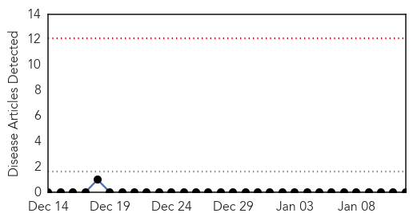
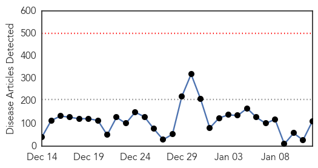
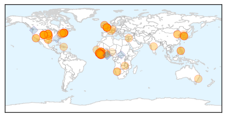
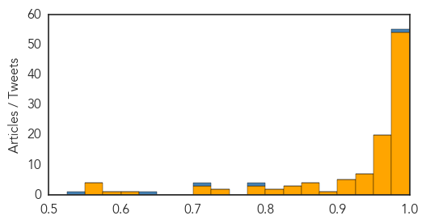

Bubonic Plague
30-Day Web Trend
0 alerts, 0 warnings

30-Day Twitter Trend
0 alerts, 0 warnings

Article Locations

Article Confidences

Top Articles:
-
No articles found for Jan 12, 2015
Top Tweets:
-
No tweets found for Jan 12, 2015
Ebola
30-Day Web Trend
0 alerts, 0 warnings

30-Day Twitter Trend
0 alerts, 0 warnings

Article Locations
Article Confidences
Top Articles:
- 1.000
- Denver hospital monitoring patient for Ebola
- 1.000
- Remember the Ebola epidemic? It's still not over.
- 1.000
- Denver hospital monitoring patient for Ebola
- 1.000
- Ebola survivor Rick Sacra, MD, ‘privileged’ to return to Liberia to treat patients
- 1.000
- Denver Health testing Arvada-area traveler for Ebola
- 1.000
- Doctor Who Beat Ebola Returning To West Africa
- 1.000
- Patient in Denver hospital being monitored for Ebola
- 0.999
- Ending Ebola in ’15 depends on locals as much as foreign aid
- 0.998
- MSF Opens Treatment Centre In New Sierra Leone Ebola Hotspot
- 0.998
- Patient at Denver Health tests negative for Ebola
- 0.998
- Mass. Doctor Rick Sacra Discusses Return to Africa
- 0.998
- Ebola nurse Pauline Cafferkey 'no longer critical' and showing signs of improvement, Royal Free Hospital confirms
- 0.998
- OXFAM DONATES A 4X4 TOYOTA LAND CRUISER VEHICLE TO THE MINISTRY OF HEALTH AND SANITATION
- 0.998
- OXFAM donates a 4×4 Toyota Land Cruiser to Health Ministry « Awoko Newspaper
- 0.997
- Colorado patient to be tested for Ebola -state health officials
- 0.997
- Massachusetts doctor who beat Ebola heading back to Liberia
- 0.997
- British Ebola nurse Pauline Cafferkey no longer critical: hospital
- 0.997
- Massachusetts doctor who beat Ebola heading back to Liberia
- 0.997
- Mass. Doctor Who Beat Ebola To Return To Liberia
- 0.997
- China quietly toughens travel restrictions on West Africans
- 0.996
- China sending large Ebola relief team to West Africa
- 0.996
- U.S. doctor who beat Ebola heading back to Liberia
- 0.996
- Colorado patient tests negative for Ebola: state health officials
- 0.996
- Colorado patient tests negative for Ebola: state health officials
- 0.995
- UMMS Ebola relief effort ships $1.7M in protective gear for health care workers in Liberia
- 0.995
- Pujehun Is Not Relaxing Guard against Ebola Virus
- 0.994
- Mass. doctor Richard A. Sacra to return to Liberia after recovering from Ebola
- 0.994
- After Ebola, WHO blames governments and seeks more clout
- 0.993
- After Ebola, WHO blames governments and seeks more clout
- 0.993
- Medical charity MSF opens Ebola clinic for pregnant women
- 0.993
- Patient At Denver Health Tests Negative For Ebola « CBS Denver
- 0.992
- Denver hospital testing patient for Ebola
- 0.992
- Ebola nurse no longer critically ill
- 0.992
- American Ebola survivor to return to work in West Africa
- 0.990
- Manchester Ebola scare: Man in isolation and being tested for deadly illness
- 0.990
- UMass Doctor Headed Back To Liberia After Recovering From Ebola
- 0.989
- Ebola outbreak: Manchester hospital patient tested
- 0.988
- Saah Joseph Ebola team ready for Sierra Leone
- 0.988
- Ebola survivor Dr. Rick Sacra returning to Liberia
- 0.988
- Rising Sun
- 0.987
- Shelton drug company works on Ebola cure
- 0.986
- US doctor who beat Ebola heading back to Liberia
- 0.985
- American Ebola survivor Dr. Rick Sacra returns to Liberia this week
- 0.985
- Ebola clue may lurk in 10 million bats in Zambian fig trees
- 0.984
- British Ebola nurse Pauline Cafferkey no longer critically ill says doctors
- 0.983
- American Ebola Survivor Dr. Rick Sacra Returns to Africa to 'Show Love of Jesus' To Those Still Suffering
- 0.983
- UPDATE 2-Colorado patient tests negative for Ebola - state health officials
- 0.982
- Dr. Rick Sacra, Now Ebola-Free, Returning to Liberia to Help Rebuild
- 0.982
- Ebola clue may lurk in 10 million bats in Zambian fig trees
- 0.981
- Ebola clue may lurk in 10 million bats in Zambian fig trees
Showing top 50 articles...
Top Tweets:
- 0.993
- Ebola Update: 21,086 confirmed, probably & suspected cases of Ebola reported in 3 most affected countries, with 8,289 deaths. EbolaResponse
- 0.942
- RT: Ebola Hurts More Than the Sick: http://t.co/R8xM9WUmLZ ebolaoutbreak AfricaAgainstEbola AfricaStopEbola Ebola Liberia…
- 0.841
- In Guinea every HCW is at risk for Ebola. Learn how CDC scientists are training HCW in non-Ebola treatment centers. http://t.co/NAouzpL5yS
- 0.840
- Smartphone app to detect risk for Ebola exposure Ebola EbolaResponse http://t.co/0Brz8Iy0Nr healio
- 0.803
- Ebola death toll rises in West Africa while Americans' interest wanes http://t.co/zvvB20d0eS
- 0.782
- Exactly. Together we can stop Ebola.
- 0.755
- One year after the start of the Ebola outbreak, @WHO approves two Ebola vaccines http://t.co/Mrn4PTlxOv TackleEbola http://t.co/w5m6DruFpi
- 0.720
- Denver hospital testing patient for Ebola http://t.co/s8Rsx0GZAw
- 0.705
- RT: Ebola Hampering Household Economies across Liberia and Sierra Leone, according to latest report: http://t.co/fG1ohMGJYs eb…
- 0.693
- Ebola Vaccine Will Soon Be Tested In West Africa http://t.co/5O4zyVPfZW
- 0.682
- RT: "We must not rest until there are zero cases of Ebola." -Dr. Rick Sacra http://t.co/sshGckRUxT
- 0.618
- 2 Leading Ebola Vaccines Appear Safe, Further Tests Starting http://t.co/ImEbyFcP4Q
- 0.553
- AFD blog `@WHO: Encouraging Results From Ebola Vaccine Phase I Clinical Trials' http://t.co/9snY87xgps
- 0.542
- Traveling the last mile to zero Ebola cases in Liberia, via http://t.co/WC78pXsWs4
- 0.511
- Ebola Vaccine Trials Offer Hope, WHO Head Says http://t.co/la2LgxBEIY